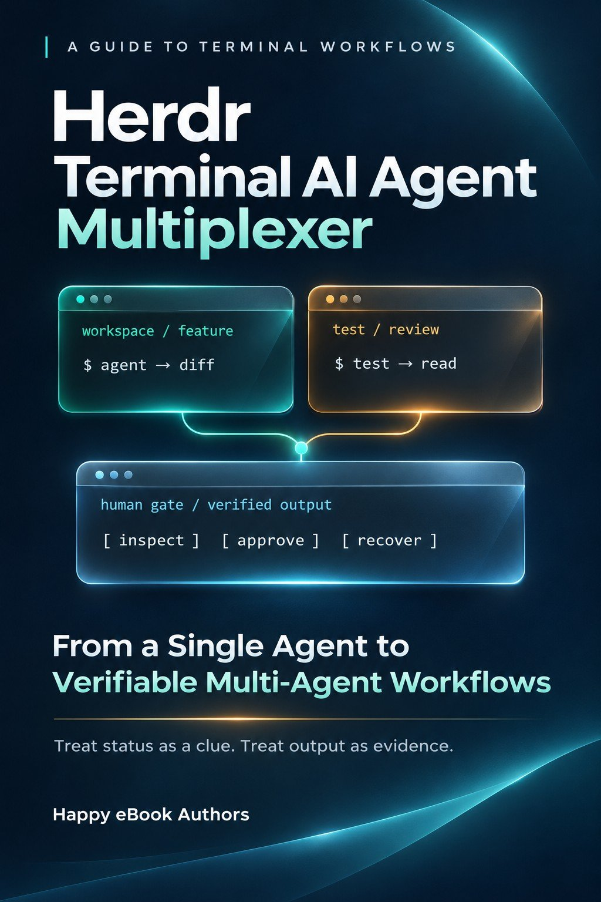

Herdr Terminal AI Agent Multiplexer
：From a Single Agent to Verifiable Multi-Agent Workflows

Herdr Terminal AI Agent Multiplexer
：From a Single Agent to Verifiable Multi-Agent Workflows
Running several coding agents in a terminal is easy to start and harder to verify. This practical guide shows developers how to organize work with Herdr, keep parallel changes isolated with Git worktrees, and check what an agent actually changed before accepting the result. Work from the terminal concepts outward: organize workspaces, tabs, and panes; reconnect to sessions; interpret agent state as an observation rather than proof; and build repeatable workflows that read back output, run tests, and inspect diffs. Later chapters cover configuration, remote SSH sessions, review loops, and a capstone workflow with explicit human decision points. The book is written for readers who already use a shell and basic Git. Examples emphasize version checks, bounded tasks, recovery after failure, and evidence another engineer can follow. Herdr interfaces change over time, so the book points readers to current official documentation and local help instead of promising that every command works across releases. Topics include: - Herdr workspaces, tabs, panes, and session reconnection - Agent state, output review, and human approval gates - Version-aware CLI and API workflows - Git worktree isolation for parallel changes - Configuration and remote-session checks - A test, review, revision, and integration capstone This is an independent practical guide. It does not claim endorsement by Herdr or any agent provider.
作品介紹；目前未提供購買或試閱入口